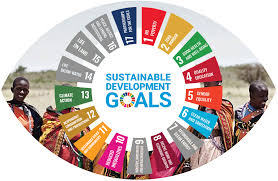
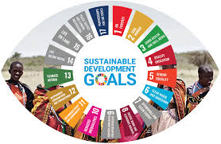

Dampak Internasional SDGs 16
SDGs 16 memiliki dampak yang sangat besar bagi dunia internasional karena tujuan ini mendorong terciptanya masyarakat global yang lebih aman, stabil, dan berkeadilan, sesuatu yang menjadi fondasi utama bagi kerja sama antarnegara. Dengan adanya komitmen kolektif untuk memperkuat hukum, melawan korupsi, dan menjaga perdamaian, SDGs 16 membantu menciptakan lingkungan internasional yang lebih dapat diprediksi sehingga negara-negara dapat bekerja sama tanpa diliputi ketegangan atau rasa saling curiga. Salah satu dampak terpentingnya adalah berkurangnya konflik bersenjata di berbagai wilayah, karena negara-negara didorong untuk mengutamakan dialog, diplomasi, dan penyelesaian sengketa secara damai. SDGs 16 juga meningkatkan perlindungan hak asasi manusia di level global, sebab tujuan ini menekankan kesetaraan akses terhadap keadilan dan menghapuskan diskriminasi, sehingga tekanan internasional terhadap negara yang melanggar HAM menjadi lebih kuat dan terkoordinasi. Dalam bidang ekonomi, SDGs 16 menciptakan iklim investasi yang lebih stabil, karena negara dengan institusi transparan dan rendah korupsi cenderung dipercaya oleh investor global, yang akhirnya meningkatkan kerja sama perdagangan internasional. Selain itu, tujuan ini memperkuat kolaborasi lintas negara dalam memerangi kejahatan internasional seperti terorisme, pencucian uang, perdagangan manusia, perdagangan senjata, dan kejahatan siber, sehingga negara-negara dapat bertukar informasi dan teknologi untuk meningkatkan keamanan global. Dampak lainnya adalah meningkatnya transparansi pemerintahan di banyak negara, karena komunitas internasional sekarang memiliki standar yang lebih jelas mengenai tata kelola yang bersih dan akuntabel. SDGs 16 juga berkontribusi pada peningkatan kualitas demokrasi dunia, sebab negara-negara lebih didorong untuk menjaga kebebasan berpendapat, kebebasan pers, dan perlindungan terhadap kelompok rentan. Secara keseluruhan, SDGs 16 memberikan dampak positif yang luas dengan mendorong dunia menjadi tempat yang lebih aman, stabil, adil, dan manusiawi untuk semua orang tanpa memandang negara asal, identitas, ataupun kondisi sosial.
 
